Memory-v2v: Memory-Augmented Video-to-Video Diffusion for Consistent Multi-Turn Editing
Duygu Ceylan
Principal Research Scientist · Adobe Research, London
Duygu Ceylan is a Principal Research Scientist at Adobe Research in London. Before joining Adobe in 2014, she obtained her PhD degree from EPFL, where she worked with Prof. Mark Pauly. She graduated from the Computer Engineering Department of METU in 2007, and received her Master's degree in Computer Science from Bilkent University in 2009, where she also worked as a software engineer at Aselsan Inc.
Her research interests include using machine learning techniques to infer and analyze 3D information from images and videos, and to use that information to generate and edit 2D and 3D content. She works at the intersection of computer vision and computer graphics, looking for new methods to bridge the gap between 2D and 3D.
If you would like to do a research internship with her, or to join the group at Adobe Research, please send an email with your resume and your research interests.
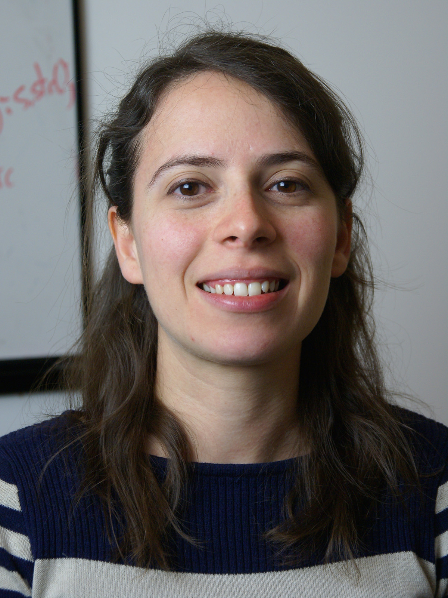
News announcements
-
13 October 2026
Website relaunch
Duygu has rebuilt her personal website as a small, content-driven static site. Publications, news, and other details are now edited as plain text files and rebuilt with a single command, so updates are quick and easy to keep accurate.
Publications 71 papers
71 of 71
2026
Prism: A Unified Framework for Photorealistic Reconstruction and Intrinsic Scene Modeling
GeoFusionLRM: Geometry-Aware Self-Correction for Consistent 3D Reconstruction
LAMP: Language-Assisted Motion Planning for Controllable Video Generation
V-RGBX: Video Editing with Accurate Controls over Intrinsic Properties
ReasonX: MLLM-Guided Intrinsic Image Decomposition
2025
Learned Single-Pass Multitasking Perceptual Graphics for Immersive Displays
Improving Video Diffusion Transformer Training by Multi-Feature Fusion and Alignment from Self-Supervised Vision Encoders
MonetGPT: Solving Puzzles Enhances MLLMs' Image Retouching Skills
Free-Viewpoint Human Animation with Pose-Correlated Reference Selection
ShotAdapter: Text-to-Multi-Shot Video Generation with Diffusion Models
JOG3R: Towards 3D-Consistent Video Generators
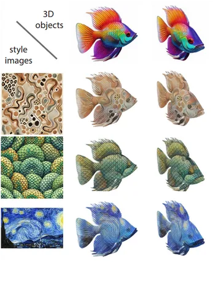
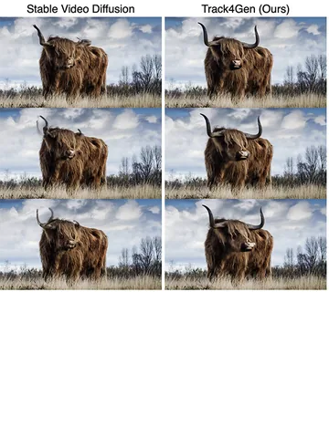
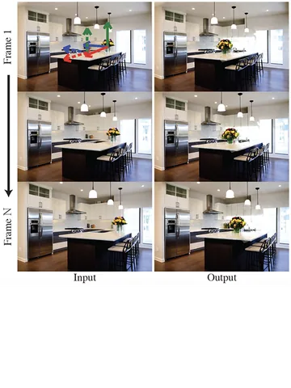
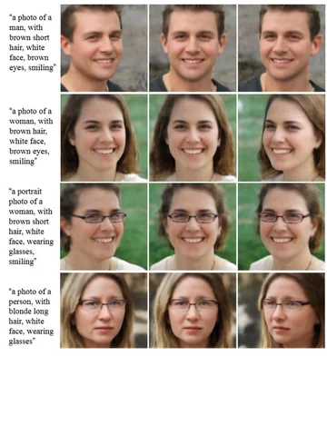
2024
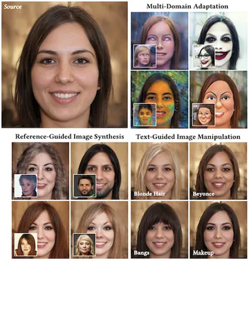
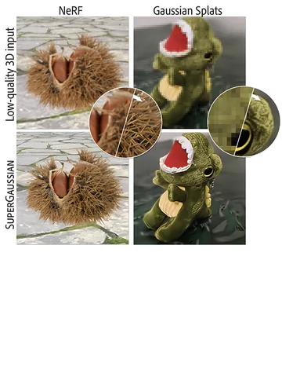
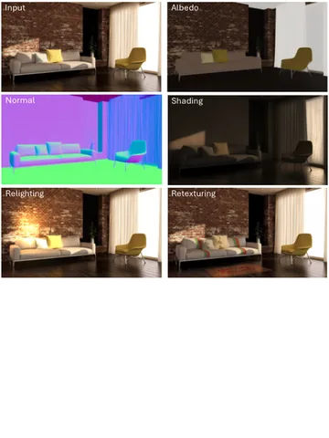
Diffusion Models for Visual Content GenerationCourse
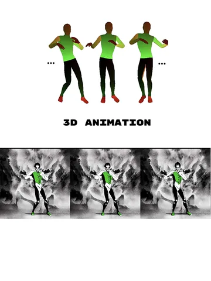
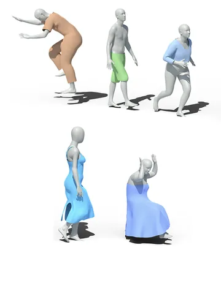
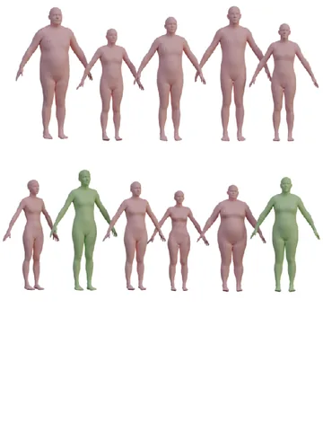
Boosting Camera Motion Control for Video Diffusion Transformers
2023
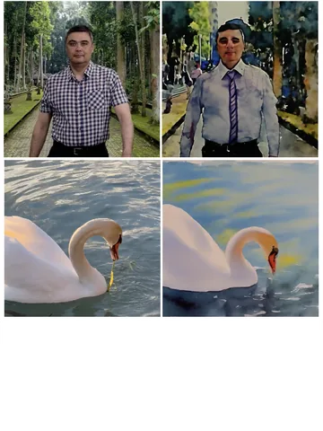
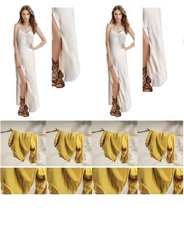
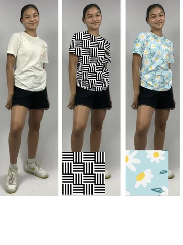
2022
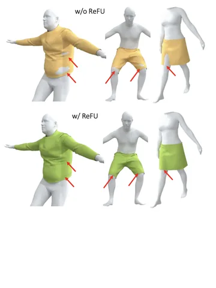
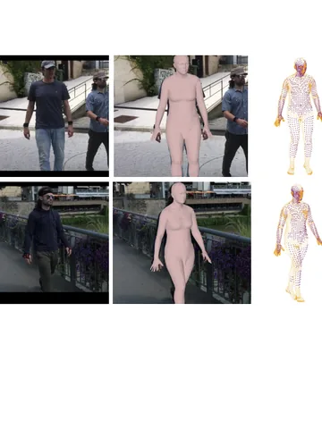
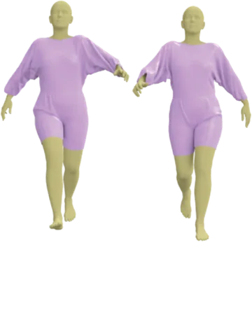
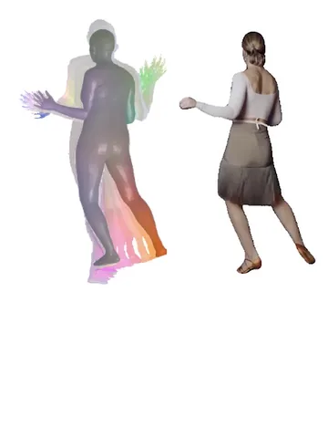
2021
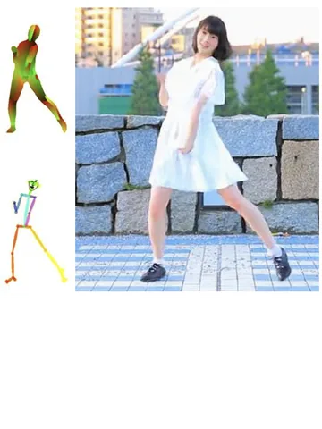
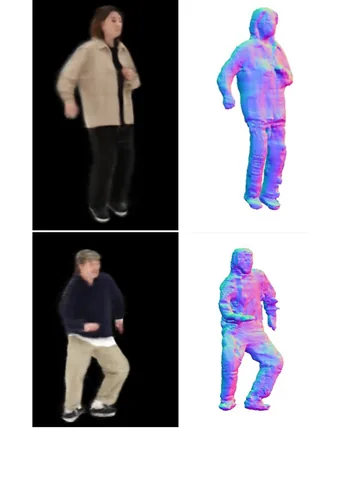
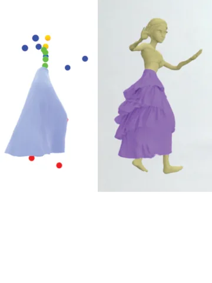
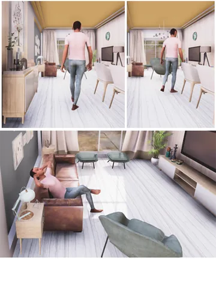
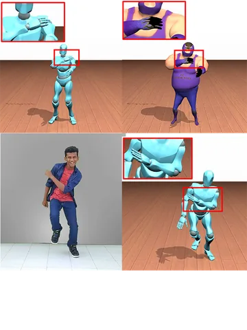
Contact-Aware Retargeting of Skinned Motion
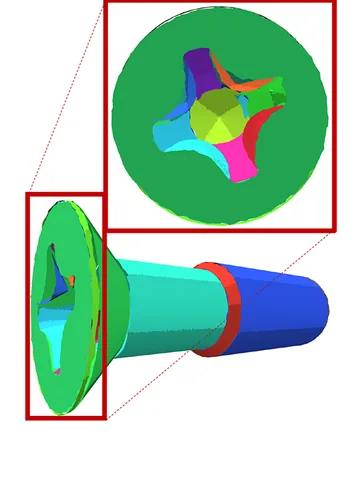
CPFN: Cascaded Primitive Fitting Networks for High-Resolution Point Clouds
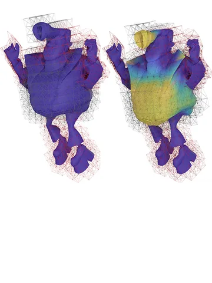
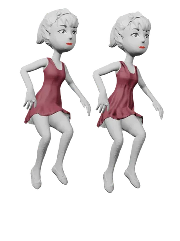
2020
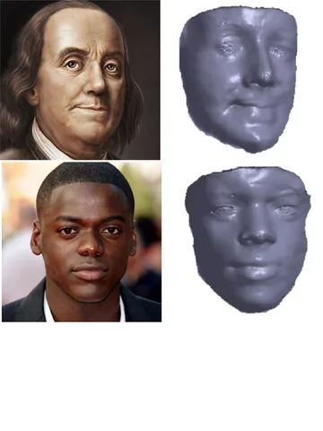
Learning Monocular Face Reconstruction using Multiview Supervision
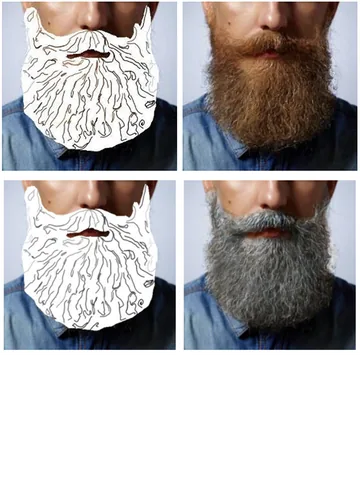
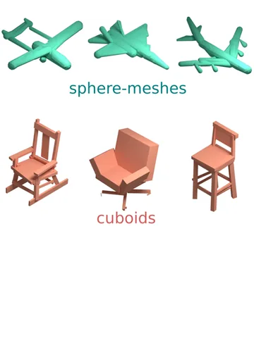
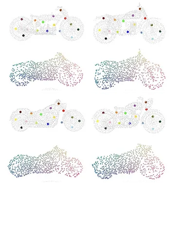
2019
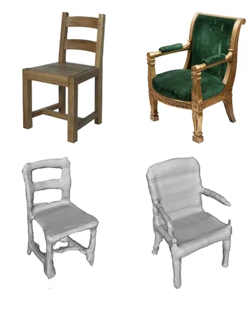
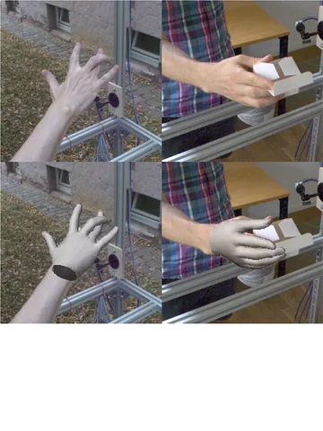
FreiHand: A Dataset for Markerless Capture of Hand Pose and Shape from Single Images
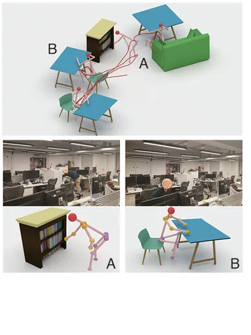
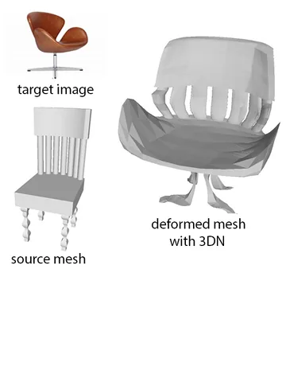
2018
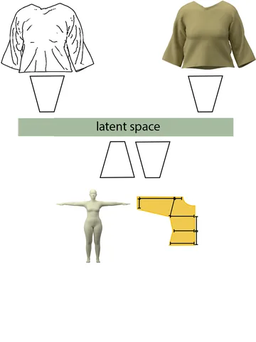
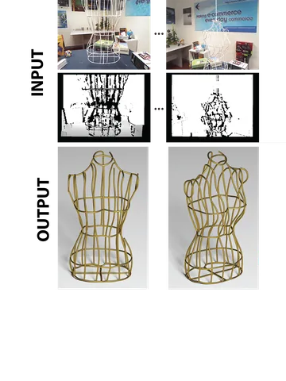
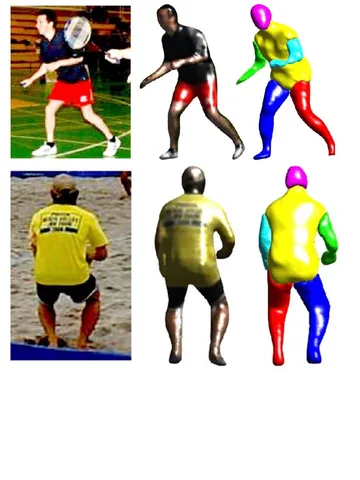
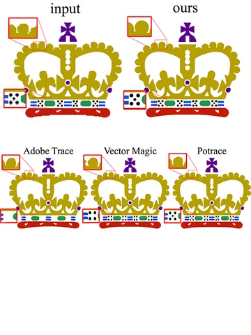
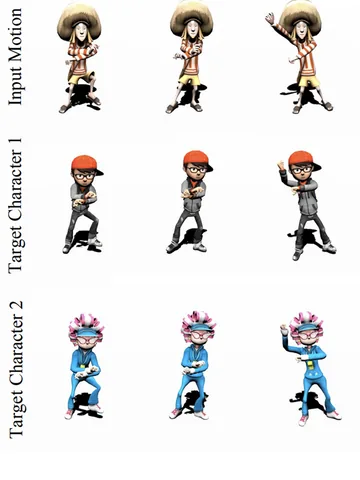
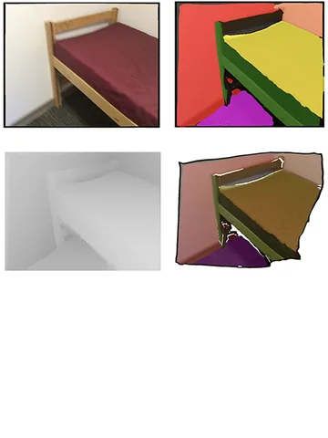
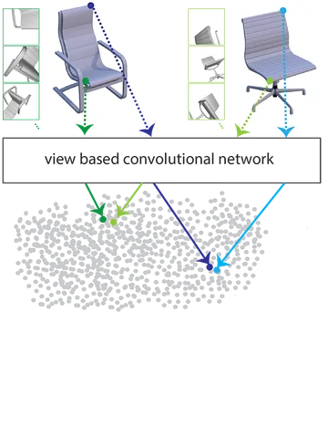
2017
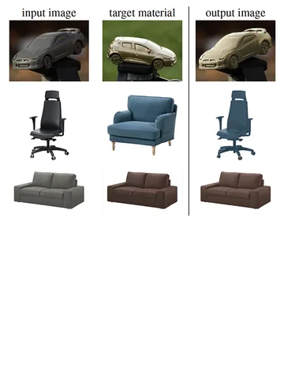
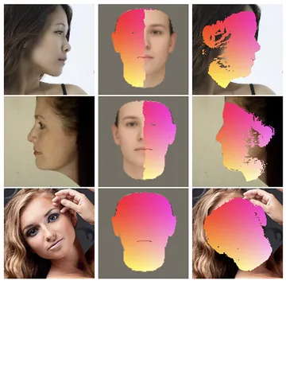
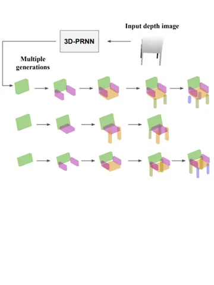
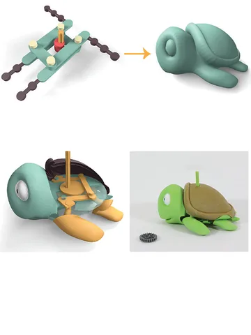
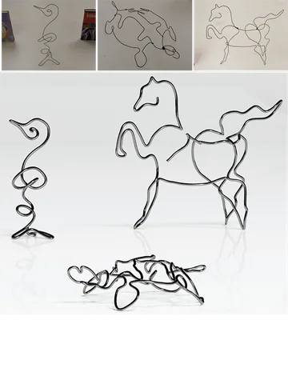
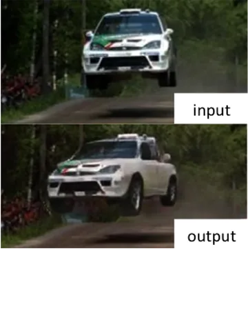
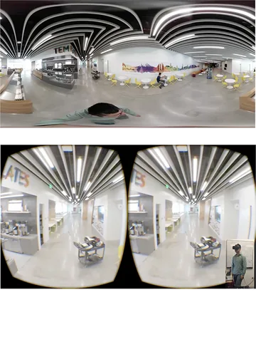
2016
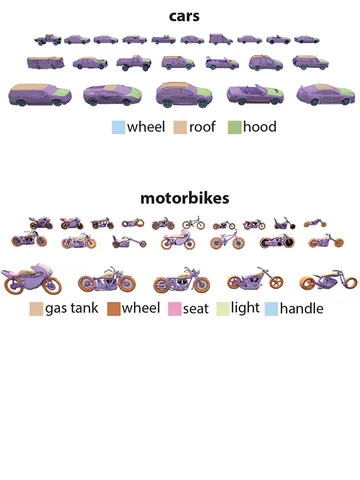
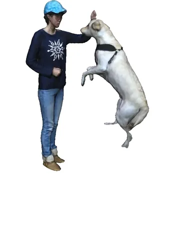
Discovering Structured Variations via Template Matching
2015
2014
Coupled Structure-from-Motion and 3D Symmetry Detection for Urban Facades
2013
Symmetry in 3D Geometry: Extraction and Applications
2012
Background
2014 – Present
Principal Research Scientist
Adobe Research, London, United Kingdom
2009
M.Sc., Computer Science
Bilkent University, Türkiye
2007
B.Sc., Computer Engineering
Middle East Technical University (METU), Türkiye
Awards 2
2020
Eurographics Young Researcher Award
2015
Eurographics PhD Award
Thesis
Contact
To reach out, use the channels below or write an email directly.